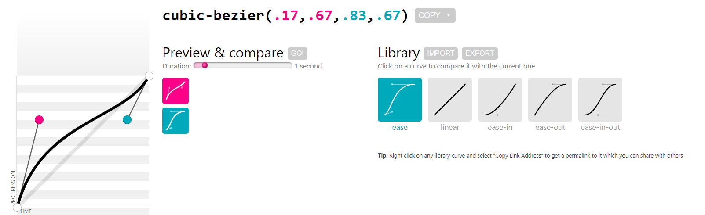
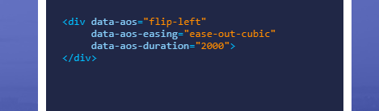

What is <div>?
The The <div> tag is an empty container that is used to define a division or a section. It does not affect the content or layout and is used to group HTML elements to be styled with CSS or manipulated with scripts.
What is <span>?
The <span> tag is a generic inline container that groups elements primarily for styling purposes. The <span> tag, as well as <div> tag are empty containers. The <div> tag groups block level elements, whereas the <span> groups inline elements. The content hooked in the <span> element, can be styled with CSS, or manipulated with JavaScript.
Cool things you can do with CSS
Cubic-Bezier
The cubic-bezier() function allows developers to exert better control over CSS animations. Typical CSS animation functions often do not have the polished look and feel that developers are after. This is where an easing function, such as Cubic Bezier, comes to the rescue. Essentially, the function defines a continuous curve and has the effect of smoothing down the start and end of an animation.
The CSS-only typewriter effect is an inventive, clever way to animate typing and add a bit of life to any webpage. Although it is not an entirely novel concept, the animations are continuing to progress. There are now plenty of really cool typewriting animations you can play around with to enhance your creativity.
Flip the object
You can make any text, image or other object do a stylish and a well-organized flip. You have to link and initialize this code first:
<link href="https://unpkg.com/aos@2.3.1/dist/aos.css" rel="stylesheet">
<script> AOS.init(); </script>